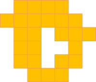

Regions
Documentation for Regions.
Regions.jl defines a set of types and functions that model a discrete 2-dimensional region concept.

In order to use the types and functions defined in the Regions package, you must first install it with the package manager and then make it known to your module:
julia> using Pkg
julia> Pkg.add("Regions")julia> using RegionsRegions can be used for various purposes in machine vision and image processing. Since they provide an efficient run-length encoding of binary images, they avoid the need to touch every pixel when doing binary morphology and thus enable substantial speedup of such operations. Regions are also the basis for binary blob analysis, where the calculation of shape-based features is substantially accelerated because of the run-length encoding. Finally, regions can be used as the domain of image processing functions.
Contents
- Introduction
- Set Operations
- Morphological Operations
- Mathematical foundation
- Erosion
- Dilation
- Opening
- Closing
- Morphological Gradient
- Inner and Outer Boundary
- Holes and fill_holes
- Gear Example
- Blob Analysis
- Connected Components
- Basic Shape Features
- Centroid and Equivalent Ellipse
- Perimeter and Compactness
- Convex Hull and Shape Convexity
- Feret Diameters
- Hole Features
- Gear Analysis Example
- Region as a Domain of Definition
- Iteration pattern
- Statistics over a region
- Point operations restricted to a region
- Combining with set operations
- Comparison with Related Packages
- Reference